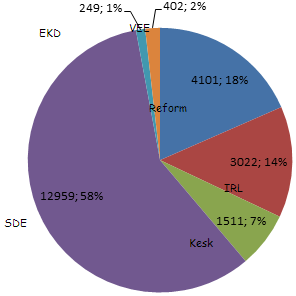

E-Valimised
Vali ringkond menüüst või kaardilt:
Ringkonnas on kokku hääli antud: 3 702
Kogu Eesti: 22 237
Kogu Eesti: 22 237
| Erakond | Reformierakond | IRL | Keskerakond | SDE | EKD | Vene Erakond Eestis |
|---|---|---|---|---|---|---|
| Häälte arv | 4101 | 3022 | 1511 | 12952 | 249 | 402 |
| Häälte protsent | 18% | 13% | 6% | 58% | 2% | 3% |
